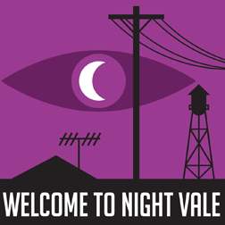

Do Podcasts Beat Film, Games And Comics As A Storytelling Medium?
A couple of weeks ago I posted my moderately ambitious piece overviewing all available storytelling media in 2015 from the point of view of a creator looking for the best possible medium in which to tell stories. And people liked it a great deal - I’ve had positive comments from all over the web, and a great deal of discussion with very intelligent folk about my conclusions.
That discussion brought up a lot of fascinating points, which I’ll be addressing in a couple of posts over here. But the most eye-opening point for me was that I’d missed an entire medium in my roundup.
Which medium?
Podcasting.
By extension, when we’re talking about podcasts as a storytelling tool we’re also talking about audio drama – a medium with a long and storied history, and one that I’ve enjoyed in the past.
Since I realised I’d missed this entire medium, I’ve been doing a lot of research on podcasts and audio as a storytelling tool. This post is meant as a kind of notebook on what I’ve learned so far about the potential for this rather neglected medium in 2015.
The Audience For Audio Drama
I must admit, I hardly ever listen to podcasts, which is why I forgot them in the first place.
Most people seem to either listen to podcasts on their commute, or whilst doing other things. I don’t have a commute, as I’ve spent the last couple of decades making animated movies from my home office, barring occasional trips out to record Brian Blessed or impersonate a Muppet on CNN (true story). And I don’t like multitasking - it’s provably inefficient and stressful.
So podcasts really don’t fit well into my lifestyle.
However, I’m aware that they’re a huge part of a lot of peoples’ lives.
Just last year podcasting had its first truly massive breakout hit with Serial, the serialised investigation into a young woman’s murder in Baltimore in 1999. Serial had hit 40,000,000 downloads by the end of 2014, with an average of 3.5 million downloads per episode – numbers that compare pretty well with cable television shows.
At the same time, looking at a different area of audio drama, there’s also been a massive growth in the audiobook.
Again, until recently the audiobook was a tiny, neglected corner of the market. In the last few years, though, thanks to smartphones, iTunes and Amazon spin-off Audible, Audiobooks have grown to be a billion-dollar business. Audiobooks range in production value from single-narrator readings – not exactly audio drama per se, but worth considering – to ‘multi-voiced’ audiobooks, which are pushing close to being full audio dramas.
All of which is extremely interesting. We’re looking at another medium that has had a massive change in distribution rather than just production in the last decade.
As I mentioned in the original article, the only other medium that has gone through this is written fiction – which is, not coincidentally, also probably the healthiest of the available ways to tell stories. Given that audio storytelling has arguably had a bigger transformation, that’s very interesting indeed.
How Much Does Audio Drama Cost?
The economics of audio are also pretty attractive. It’s at least an order of magnitude cheaper than film or television – a point brought up in a SXSW panel this year on audio drama. Like comics and books, it’s a medium in which it is perfectly feasible for an independent creator like me to produce long-form serialised fiction. And, indeed, several creators are doing just that.
Welcome To Night Vale is one of the new school of audio drama, and probably the closest thing to a breakout hit in audio drama at this point. It’s a single-narrator show in the style of radio news, with occasional guest voice actors.
Meanwhile, We’re Alive is a long-running audio drama centred around a zombie apocalypse. It’s sufficiently popular that it recently closed an Indiegogo campaign at $50,000 for a new 5-hour miniseries.
That number does bring up one significant point. Whilst it’s considerably cheaper than film or television, audio drama still isn’t as cheap as comics production, written fiction or even some game design. The BBC, who are pretty much the gold standard of audio drama production at this point ( they produce The Archers, the longest-running serial drama in the world and the original soap opera, as well as shorter dramas like the ground-breaking Lord Of The Rings radio adaption ), currently budget around £23,000 per hour of radio drama.
It’s certainly possible to produce credible audio drama for less than that, but the costs are still non-zero, particularly if you need to hire a sound engineer to do everything from foley work to levelling and equalising audio.
Actors can also cost significant money. Audio recording is a lot faster than film, but it still takes significant time: working in animation I’m reasonably used to the timeframes involved, and it’s around 3–4 hours for 30 minutes of finished audio. If you’re looking at producing 5+ hours of material, that still adds up to more than a week of solid recording.
And finally there are hardware costs. USB microphones are pretty cheap these days – around $100 – but if you’re looking at assembling a studio for multiple actors to record in at once, you’ll need to buy a mixer and multiple XLR condenser mics, as well as stands, pop shields and other ancilliary costs. The cost of the kit isn’t back-breaking – around $1000 or so – but it’s not zero, either.
Can Audio Drama Make Money? Surprisingly, Yes.
So can you make money? Well, like books, the answer is a very big ‘yes’ if you’re producing non-fiction. A considerable number of businesses are now focused on or built around podcasting, from Pat Flynn’s Smart Passive Income and Entrepreneur On Fire in the Internet Marketing world, to folk like Joe Rogan and Jimmy Pardo, who host profitable podcast talk shows.
And, as previously mentioned, audiobooks are a pretty big business, although I’ve been unable to get clear figures on exactly how profitable they are for authors (anyone?) as yet. Also, audiobooks that are simply a single narrator reading are a lot cheaper to make than a full audio drama, which skews the figures if we’re talking about fully produced audio drama as opposed to simple narration.
In-podcast advertising certainly pays, and at rates that would have most YouTube creators weeping into their webcams with joy.
It’s not an exaggeration to say that if video advertising rates were the equivalent of podcast advertising rates, I’d be seriously considering making video drama for streaming channels. Podcast advertising is quoted by multiple sources as being around $15 CPM – Cost Per Mille, or payout per thousand views. Given that it’s entirely possible to have multiple ads in a single podcast, figures like $60 / thousand downloads of a one hour podcast are entirely achievable.
At that point, you need a large but potentially feasible audience to break even – half a million downloads or so if you’re producing to BBC standards and prices, and around 50,000–100,000 if you’re producing to a more ‘indie’ quality. That’s still tough: Welcome To Night Vale has achieved 150,000 downloads in a single week, but that was peak performance for the breakout example of the genre. However, for a professionally-produced drama with skilled marketers behind it, those numbers look feasible to me. It’s certainly not too far off numbers that Strange Company’s video productions have achieved in the past.
Alternatively, you could sell the drama, potentially packaging it more as a highly-produced audiobook. Audible are experimenting with that market themselves, having recently commissioned an original audio drama from thriller writer Jeffery Deaver. Would it make a profit? It’s very hard to say without more figures from Audible and their self-publishing partners ACX. But it sounds plausible. Certainly, there’s precedent: audio drama producers Big Finish have been producing audio drama on CD for the past 20 years and, more recently, downloads for fans of UK sci-fi shows, as a commercial enterprise.
Oddly enough for such an old medium – given radio dramas have been around for 100 years at this point – the new audio drama feels like a very new frontier. There aren’t a lot of people producing in the medium yet, and the atmosphere in the most popular discussion groups and blogs is very ‘indie’ and uncommercial. Indeed, Fred Greenhalgh, one of the other pioneers of the ‘new audio drama’, has explicitly rejected charging for his audio dramas on the grounds that he’s more interested in popularising the medium than he is in profit.
To Audio?
All of which adds up to… what?
A very promising opportunity, that’s what. We’re looking at another medium that is growing rapidly, is relatively affordable to produce and has examples of profitable production within adjacent media if not directly within podcast audio drama itself. It has the long-form potential of television without the enormous barrier to entry, and the distribution revolution of books without being… well, books. (As I mentioned in the original article, I just don’t get on with writing written fiction.)
I’m certainly intending to experiment with a short production in the near future. I’d be really fascinated to hear about any other successful work in the medium, people working on business models for it, and similar things.
Do you think podcasts and audio dramas are an untapped opportunity for storytellers? Do you know of examples I’ve missed? Let me know!